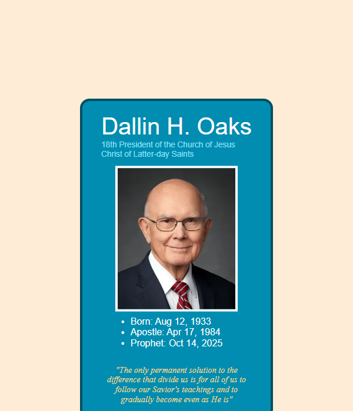
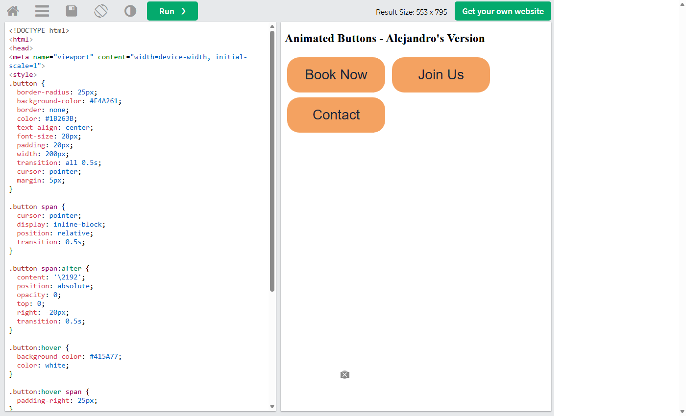

Prophet Cards
I built a card for President Dallin H. Oaks using an internal stylesheet. I learned how to use the box model, borders with rounded corners, lists, and how to style text inside a card.
Open Prophet CardWDD 130 - Web Fundamentals Portal
ICE stands for In-Class Exercise. These are small challenges where I practiced one new skill at a time.

I built a card for President Dallin H. Oaks using an internal stylesheet. I learned how to use the box model, borders with rounded corners, lists, and how to style text inside a card.
Open Prophet Card
I explored menus, images, buttons, forms, and tables on W3Schools How To and changed the code in the Try It editor. I learned that small pieces of HTML and CSS can be reused to add detail to a page.
Open Screenshot